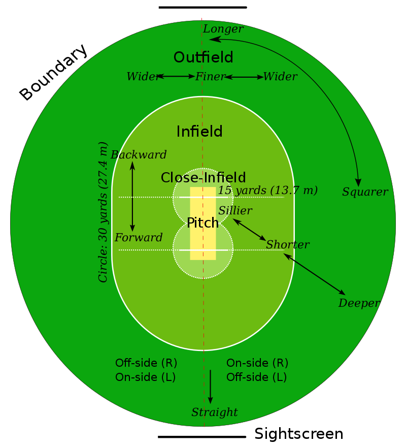

Cricket is a bat-and-ball game played between two teams of eleven players on a field at the centre of which is a 22-yard (20-metre) pitch with a wicket at each end, each comprising two bails balanced on three stumps. The batting side scores runs by striking the ball bowled at one of the wickets with the bat and then running between the wickets, while the bowling and fielding side tries to prevent this (by preventing the ball from leaving the field, and getting the ball to either wicket) and dismiss each batter (so they are "out").
When ten batters have been dismissed, the innings ends and the teams swap roles. The game is adjudicated by two umpires, aided by a third umpire and match referee in international matches. They communicate with two off-field scorers who record the match's statistical information.
The earliest reference to cricket is in South East England in the mid-16th century. It spread globally with the expansion of the British Empire, with the first international matches in the second half of the 19th century. The game's governing body is the International Cricket Council (ICC), which has over 100 members, twelve of which are full members who play Test matches. The game's rules, the Laws of Cricket, are maintained by Marylebone Cricket Club (MCC) in London.
There are no fixed dimensions for the field but its diameter usually varies between 450 and 500 feet (140 and 150 m) for men's cricket, and between 360 feet (110 m) and 420 feet (130 m) for women's cricket. Cricket is unusual among major sports (along with golf, Australian rules football and baseball) in that there is no official rule for a fixed-shape ground for professional games. On most grounds, a rope demarcates the perimeter of the field and is known as the boundary.
